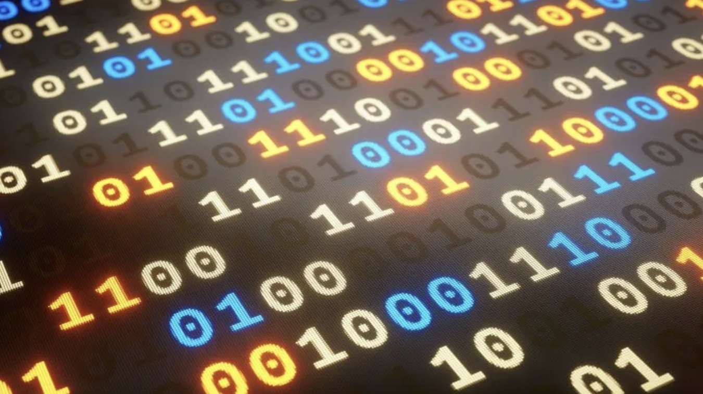

For millions of years, humans have found ways to solve problems in a myriad of ways. From inventing the plane to stepping on the moon, the rapid development of human brains has been somewhat of a miracle. One of the greatest inventions of all time, the computer, accelerated all of humanity into an era of prosperity in science, and every other aspect of the world. Computers have aided mankind for decades and allowed us to achieve huge breakthroughs in technology by performing tasks the human brain can’t comprehend. However, some tasks prove to be soo taxing for a classical computer, that they simply fail to produce results. This is where Quantum Computers come in. But before we take a look at the mind-boggling logic behind the Quantum Computers, let's first talk about how traditional computers work.
Computers use chips to represent, handle, and control data. These chips contain basic modules which contain logic gates that are operated by transistors. A transistor is the simplest block of data processors that simply acts as a switch to block or allow data to come through in the form of moving electrons. This data is represented in bits, which consists of a 0 or a 1. These 0’s and 1’s can be combined to create many complex tasks and are the backbone of any computers system. All information is represented in bits and is later converted into data readable by humans.
However, this has its limitations. At one given point in time, a computer bit can only be either a 0 or a 1. This proves to be a significant drawback in computing power when it comes to decrypting, as a classical computer will take billions of years to decrypt one possibility at a given time. This is where quantum computers come in.
Richard Feynman, an American scientist first thought of the idea of quantum computing. Rather than using a switch to stop the flow of electrons carrying data, scientists believed that they could use the peculiar laws of physics at the quantum scope and simply transport the electron to the other side of the switch without moving the switch itself. This process is called Quantum Tunneling.
In the realm of subatomic particles, physics doesn’t quite work like how scientists have predicted it to. This completely alters the idea of traditional computers. But to solve this issue, scientists have devised a way to make use of these properties and make a Quantum Computer.
As I discussed before, bits are the smallest data holders in a computer. In Quantum computers, qubits are used, which can also be set to 0’s and 1’s. But what’s the catch?
In Quantum Computers, the qubits can be a 0 and a 1 at the same time. To understand these better, I’ll use an analogy. Let's say we have a coin, where heads represent 0, and tails represent 1. When we flip a coin, it lands as either heads or tails, giving us a 0 or a 1. This is how traditional computers function. On the contrary, Qubits can be described as the duration when the coin is flipping, and there isn’t one specific side to the coin, it is both heads and tails at the same time as it rotates. This can be translated into 0’s and 1’s, and that is exactly how a qubit’s state works.
This completely changes the way things work as humongous amounts of data can be processed by only a few qubits at a time, thanks to their continuous change of state.
A qubit can be a magnetic field or a single photon. The 0’s and 1’s are then determined by the spin of that photon. Horizontal photons represent one of the possible states, which is 0, and the vertical position of the photon represents 1’s. The state of the photon is ever-moving and can be at both states at once, and this is called superposition But there is a slight drawback to this. As soon as you want to determine the value of the qubit, it has to be either vertically or horizontally polarized, thus we only get a 0 or a 1. If it stays unnoticed, however, the qubit is both a 1 and a 0, opening a huge range of possibilities in the technological world.
Another peculiar property qubits have is entanglement. This phenomenon can be simply described as a reaction of one qubit ensued by the state of another qubit. This affects the other qubit, no matter their distance. Scientists can use this to predict what outcome you get and manipulate the results according to their wishes. However, Qubit Manipulation is an extreme mind-bender and requires larger explanations to clearly explain the physics behind it.
A normal logic gate will take in a series of 0’s and 1’s and output the result, performing a calculation. In a quantum computer, quantum gates are used to convert a series of superpositions and process them into desired outcomes using entanglement to give a specific output. This gives out another superposition with a sequence of 0’s and 1’s that perform a task.
Although quantum computers aren’t really developed yet to perform huge tasks, there are applications of this life-changing invention that will make life easier by a whole lot. For example, in an identity search for let's say a million people, an ordinary computer will have to process every single one of its entries and then give out a result. Quantum computers, on the other hand, will only take a square root of that time as thousands of identities are processed simultaneously.
But once again, like every good thing, comes a bad thing. After all, every light has its shadows. People can use quantum computers to exploit IT security, which just seems to fail in front of this revolutionary device. All of our data is currently held in an encryption system that can only be decoded by a private key, namely your password. A normal computer will take the length of the universe and even more to decode the encryption using trial and error. However, a quantum computer can do this in a breeze with enough qubits and power. Luckily for us, at this stage, the quantum computers we have can only process integer factorization relatively faster than classical ones.
Although quantum computing won’t replace the devices you are reading this on, it certainly is a huge advance in technological development. With endless new opportunities such as simulations, medical uses, weather predictions, and artificial intelligence, if used correctly this new way of using computers could very well prove to be a crucial step in human advancement.
To learn more about Quantum Computers, visit IBM.